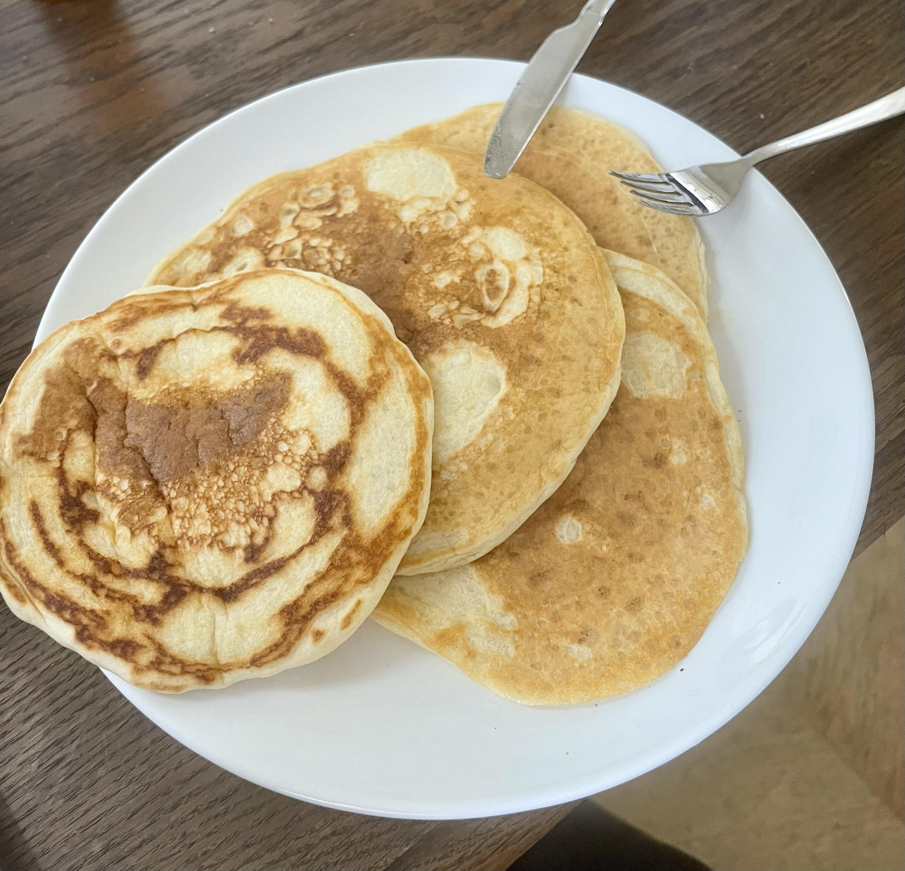

Fluffy Vegan Pancakes

Cook Time: 20 minutes
- 1 cup (120 g) all-purpose flour
- 3 tablespoons (38 g) sugar
- 1 tablespoon (14 g) baking powder
- 1 tablespoon (15 ml) apple cider vinegar
- 1 cup (240 ml) soy milk
- 1 teaspoon (5 ml) vanilla extract
- 1/2 teaspoon salt
- (optional) Sunflower oil for cooking
- Mix the dry ingredients in one large bowl and the wet ingredients in a small bowl.
- Add the wet mixture into the dry mixture bowl and whisk until smooth.
- Let rest for about 5 minutes.
- Warm a pan (with a half teaspoon of oil) over medium heat until shimmering.
- Add roughly 70 g or 1/2 cup of batter and flip once bubbles have formed on the top.
- Cook until both sides are golden brown.